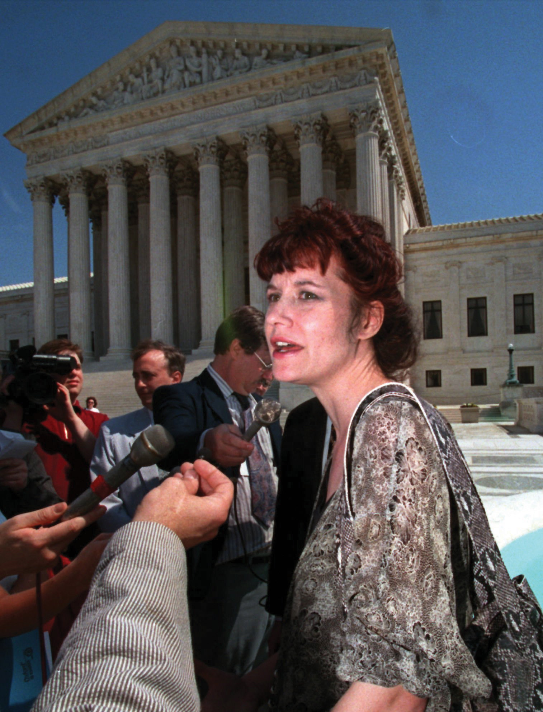
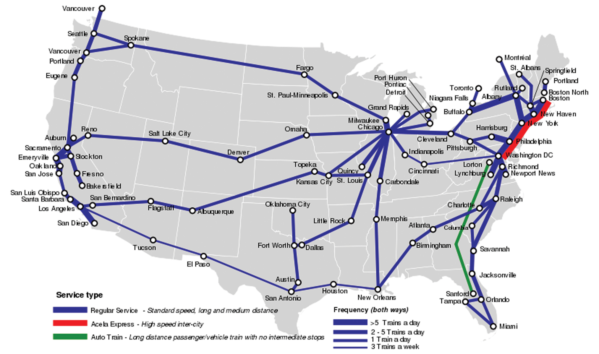

After reading this section, you should be able to answer the following questions:
The federal bureaucracy is a creature of Congress and the president. But agencies independently make policy and exert power: legislating by rulemaking; executing by implementation; and adjudicating by hearing complaints, prosecuting cases, and judging disputes.
Congresses and presidents often enact laws setting forth broad goals with little idea of how to get there. They get publicity in the media and take credit for addressing a problem—and pass tough questions on how to solve the problem to the bureaucracy.
Take the Occupational Safety and Health Act of 1971. It seeks “to assure so far as possible every working man and woman in the Nation safe and healthy work conditions.” Congress created the Occupational Safety and Health Administration (OSHA) and directed it to “establish regulations suitable and necessary for carrying this law into effect, which regulations shall be binding.” OSHA began a process of rulemakingThe process by which agencies issue statements that implement, interpret, and prescribe policy in an area authorized by legislation passed by Congress.: issuing statements to clarify current and future policy in an area authorized by the law. It had to decide on answers for questions: What work conditions produce or endanger safety? What work conditions threaten workers’ health? How far is “so far as possible”?Cornelius M. Kerwin, Rulemaking: How Government Agencies Write Law and Make Policy, 3rd ed. (Washington, DC: CQ Press, 2003), 7–8 and chap. 2.
OSHA
Learn more about the history of OSHA at http://www.dol.gov/oasam/programs/history/mono- osha13introtoc.htm.
When not all specified goals are equally simple to pursue, agencies gravitate toward those easier to put into effect. OSHA was championed by labor organizations that deemed health hazards on the job to be a bigger problem than safety. But OSHA’s rulemaking focused more on safety than on health. It is simpler to calculate short-term costs and benefits of safety hazards than long-term costs and benefits of health hazards: for example, it’s easier to install protective railings than it is to lessen exposure to potentially carcinogenic chemicals.James Q. Wilson, Bureaucracy: What Government Agencies Do and Why They Do It (New York: Basic Books, 1989), 42–43.
Congress requires agencies to follow prescribed detailed procedures in issuing a rule. The explosion of New Deal agencies in the 1930s created inconsistency from one agency to the next. In 1934, the Federal RegisterThe government publication that prints all rules and decisions made by agencies., which prints all rules and decisions made by agencies, was launched to provide a common source. The ever-rising number of pages annually in the Register shows ever lengthier, ever more intricate rules.
In the first round, the agency interprets the statute to be applied and lists grounds for a preliminary decision. Next, it invites feedback: holding hearings or eliciting written comments from the public, Congress, and elsewhere in the executive branch. Then it issues a final rule, after which litigation can ensue; the rule may be annulled if courts conclude that the agency did not adequately justify it. Thus in March 2009 a federal judge ordered the Food and Drug Administration to lower the minimum age at which women could obtain the Plan B birth control pill without prescription from eighteen to seventeen. He ruled the agency had improperly bowed to pressure from the Bush administration in setting the limit at eighteen.
Any rule listed in the Federal Register has the status and force of law. The agency can modify the rule only by the same arduous process. The Bush administration worked diligently over its first three years to repeal the Clinton administration’s policy forcing utility plants to spend billions of dollars on pollution upgrades during any renovations that, in the language of the Clean Air Act, exceeded “routine maintenance.”Katharine Q. Seelye, “White House Seeks Changes in Rules on Air Pollution,” New York Times, June 14, 2002, A1. Environmental Protection Agency (EPA) administrator Christine Todd Whitman sought to make a “clarification” of “routine maintenance” that was more lenient to the power plants than her predecessor’s strict interpretation. The new rule, first unveiled in 2002, went through lengthy review before being finally issued in late 2003. Several states in the Northeast subject to acid rain caused by Midwestern power plants promptly sued but did not win in court. Such rulemaking deep in the federal bureaucracy rarely achieves the media attention that an open debate and decision in Congress would attract—making it an unobtrusive way for officials to accomplish something politically unpopular, such as relaxing clean-air standards.Bruce Barcott, “Changing All the Rules,” New York Times Magazine, April 4, 2004, 38–44ff.
The bureaucracy makes policy through implementationThe process of applying general policies to specific cases in order to put legislation or rules into effect., or applying general policies to given cases. Agencies transform abstract legal language into specific plans and organizational structures. There are rarely simple tests to assess how faithfully they do this. So even the lowliest bureaucrat wields power through implementation. Immigration agents decide which foreigners to grant asylum in the United States. Internal Revenue Service agents decide which tax returns to audit.
Some implementation can be easily measured. Examples are the Postal Service’s balance sheet of income and expenditures or the average number of days it takes to deliver a first-class letter over a certain distance in the United States. But an agency’s goals often conflict. Congress and presidents want the Postal Service to balance its budget but also to deliver mail expeditiously and at low cost to the sender and to provide many politically popular but costly services—such as Saturday delivery, keeping post offices open at rural hamlets, and adopting low postal rates for sending newspapers and magazines.John T. Tierney, The U.S. Postal Service: Status and Prospects of a Public Enterprise (Dover, MA: Auburn House, 1988), 2.
Ambiguous goals also pose problems for agencies. When the Social Security Administration (SSA) was formed in the 1930s, it set up an efficient way to devise standards of eligibility (such as age and length of employment) for retirement benefits. In the 1970s, Congress gave the SSA the task of determining eligibility for supplementary security income and disability insurance. Figuring out who was disabled enough to qualify was far more complex than determining criteria of eligibility for retirement. Enmeshed in controversy, the SSA lost public support.The distinction of “goal” and “task” is well described in James Q. Wilson, Bureaucracy: What Government Agencies Do and Why They Do It (New York: Basic Books, 1989), chap. 3. On the SSA, see Martha Derthick, Agency under Stress: The Social Security Administration in American Government (Washington, DC: Brookings, 1990).
Agencies act like courts through administrative adjudicationApplying rules and precedents to individual cases in an adversarial setting with a defense and prosecution.: applying rules and precedents to individual cases in an adversarial setting with a defense and prosecution. Some, like the National Labor Relations Board (NLRB), act as both prosecutor and judge.See William B. Gould IV, A Primer on American Labor Law, 2nd ed. (Cambridge, MA: MIT Press, 1986), especially chap.4. Federal law directs workers complaining about unfair labor practices to go to regional directors of NLRB, who decide if there is probable cause that the law has been violated. If so, NLRB’s general counsel brings a case on behalf of the complainant before NLRB’s special administrative law judges, who hear both sides of the dispute and issue a decision. That ruling may be appealed to the full NLRB. Only then may the case go to federal court.
How can civil servants prove they are doing their jobs? On a day-to-day basis, it is hard to show that vague policy goals are being met. Instead, they demonstrate that the agency is following agreed-on routines for processing cases—standard operating procedures (SOPs)Recurring routines to manage particular cases..Charles E. Lindblom, “The Science of ‘Muddling Through,’” Public Administration Review 19 (1959): 79–88. So it is hard for agencies to “think outside the box”: to step back and examine what they are doing, and why. The news media’s lack of day-to-day interest in the vast majority of agencies only further dampens attention to the big picture. Sometimes, only severe crises jar agencies out of their inertia. For example, following the terrorist attacks of 9/11 the Central Intelligence Agency (CIA) moved to revive old-fashioned forms of human intelligence, such as planting spies in terrorist camps and increasing its number of Arabic-language speakers, when it became clear that its standard operating procedure of using high-tech forms of intelligence, such as satellite images and electronic eavesdropping, had been inadequate to forecast, let alone prevent, the attacks.
Agencies are alert to and heed the power of the president and Congress over their activities. But agencies can effectively influence Congress and presidents as much as the other way around. And if Congress and presidents disagree, agencies are in the happy situation of responding to the branch that is closer to what they want to do.Dan B. Wood and Richard W. Waterman, Bureaucratic Dynamics: The Role of Bureaucracy in a Democracy (Boulder, CO: Westview Press, 1994), 96.
The signs of an agency’s power include (1) the legal authority Congress and presidents accord it, (2) the size and continuity of its budget, and (3) the deference it gains from expertise. But each of these hallmarks amounts to little without political support—especially from those individuals and groups most interested in or affected by an agency’s decisions. Without such support, agencies find their programs confined by others, their budgets slashed, and their claims to expertise doubted.
Agencies “are not helpless, passive pawns in the game of politics as it affects their lives; they are active, energetic, persistent participants.”Herbert Kaufman, Are Government Organizations Immortal? (Washington, DC: Brookings, 1976), 9. They work to create and maintain political support from the president, Congress, and the public. Favorable media coverage is instrumental in building this political support.
Agencies also obtain political support by shifting policies when new political participants challenge their standard approach.Daniel A. Mazmanian and Jeanne Nienaber, Can Organizations Change?: Environmental Protection, Citizen Participation, and the Corps of Engineers (Washington, DC: Brookings, 1979); and John Brehm and Scott Gates, Working, Shirking, and Sabotage: Bureaucratic Response to a Democratic Public (Ann Arbor: University of Michigan Press, 1997). For example, in the 1970s the Army Corps of Engineers moved away from a rigid prodevelopment stance when environmental groups arose and lobbied for a law requiring the Corps to draft environmental impact statements.
Agencies are part of the executive branch. Presidents select heads of agencies and make numerous other political appointees to direct and control them. But political appointees have short careers in their offices; they average just over two years.Joel D. Aberbach and Bert A. Rockman, In the Web of Politics: Three Decades of the U.S. Federal Executive (Washington, DC: Brookings, 2000), chap.4. Civil servants’ long careers in government in a single agency can easily outlast any political appointee who spars with them.Joel D. Aberbach and Bert A. Rockman, In the Web of Politics: Three Decades of the U.S. Federal Executive (Washington, DC: Brookings, 2000), 74.
Presidents are tempted to pursue implementation by agencies to accomplish policy goals that Congress has frustrated. Tools of this administrative presidencyPolitical scientist Richard Nathan’s term for the tactics presidents use with the bureaucracy to implement policy goals blocked by Congress. include establishing agencies, strategic appointments, internal reorganization, and budget cuts.The term was coined by Richard Nathan, The Plot that Failed: Nixon and the Administrative Presidency (New York: Wiley, 1975). Richard Nathan developed it beyond the Nixon case in The Administrative Presidency (New York: Wiley, 1983).
Presidents can set up an agency by executive order—and dare Congress not to authorize and fund it. President John F. Kennedy issued an executive order to launch the Peace Corps after Congress did not act on his legislative request. Only then did Congress authorize, and allocate money for, the new venture. Agencies created by presidents are smaller than those begun by Congress; but presidents have more control of their structure and personnel.William G. Howell and David E. Lewis, “Agencies By Presidential Design,” Journal of Politics 64 (2002): 1095–1114.
Presidents make strategic appointments. Agency personnel are open to change when new appointees take office. Presidents can appoint true-believer ideologues to the cabinet who become prominent in the news, stand firm against the sway of the civil service, and deflect criticism away from the president.Richard J. Ellis, Presidential Lightning Rods: The Politics of Blame Avoidance (Lawrence: University Press of Kansas, 1994). After the 9/11 attacks, President Bush let Attorney General John Ashcroft take the lead—and the flak—on aggressive law enforcement policies that many saw as threats to civil liberties.Todd S. Purdum, “Mr. Heat Shield Keeps Boss Happy,” New York Times, December 6, 2001, B7.
Presidents also can and do fire agency officials who question the White House line. In 2002, Mike Parker, head of the Army Corps of Engineers and former member of Congress, testified on Capitol Hill that the president’s budget for the Corps was too low. His remarks were covered heavily in the news—as was his dismissal.Joan McKinney, “Too Much Mouth—Or a New Policy?,” Baton Rouge Sunday Advocate, March 10, 2002, 9B.
Presidents who dislike an agency’s programs can decide not to replace departing staffers. Early in his term, George W. Bush (the first president to graduate from business school) made few appointments to the Securities and Exchange Commission that regulates the stock market; he only boosted its staff after financial scandals rocked Wall Street in 2002.Stephen Labaton, “S.E.C. Suffers from Legacy of Nonbenign Neglect,” New York Times, September 20, 2002, B1.
Presidents can rearrange an agency’s organizational chart. President Richard Nixon faced a ballooning welfare budget after taking office in 1969. Congress failed to act on welfare reform. Nixon turned to administrative measures to slow federal outlays. Deeply conservative appointees initiated new rules; instead of worrying about denying welfare to someone who was qualified, they stressed reducing the number of ineligible persons receiving benefits. Civil servants were moved out of offices devoted to specific programs and reported to managers who graded them on their ability to cut costs. The result? Welfare rolls leveled off despite a worsening economy.Ronald Randall, “Presidential Power versus Bureaucratic Intransigence: The Influence of the Nixon Administration on Welfare Policy,” American Political Science Review 73 (1979): 795–810.
Presidents pursue the administrative presidency most effectively with programs that are obscure or unpopular with the public. Otherwise, they risk reactions on Capitol Hill. For example, President Ronald Reagan, seeking more leeway for business, successfully restrained the EPA in his first term. He appointed loyal, lightning-rod individuals who went to Congress and asked for budget reductions. He left positions vacant. He shifted authority to the states. He subjected environmental laws to cost-benefit calculations that emphasized tangible costs of regulation over intangible benefits. After two years, fewer new regulations were issued, and environmental standards and enforcement were relaxed.
These victories produced a backlash. Civil servants felt excluded. Environmental interest groups made Reagan’s appointees into villains they railed against in media campaigns. The resultant shift in public opinion made itself known to Congress, which eventually led Reagan to fire the agency heads. Under new, more moderate leadership, the EPA veered away from its relentlessly probusiness stance.This case study draws from Richard Waterman, Presidential Influence and the Administrative State (Knoxville: University of Tennessee Press, 1989), chap. 5; and Marissa Martino Golden, What Motivates Bureaucrats? (New York: Columbia University Press, 2000), chap. 6.
The administrative presidency does not work unless presidents and their political appointees clearly articulate what they wish to accomplish at the outset. Bureaucrats cannot respond to conflicting or confused signals from political appointees. Communicating clearly to a far-flung executive branch is a key reason why presidents are determined to craft a “line of the day” and disseminate it through the executive branch.
George W. Bush carried coordination of presidential and agency communication one step further by ensuring that the White House, not the department secretary, would appoint the press officers in each cabinet department. As Bush’s first chief of staff, Andrew Card, explained, “Our communications team is not just a team for the White House. It is a communications team for the executive branch of government.”Quoted in Martha Joynt Kumar, “Communications Operations in the White House of President George W. Bush: Making News on His Terms,” Presidential Studies Quarterly 33 (2003).
Presidential appointments, especially of cabinet secretaries, are one way to control the bureaucracy. But cabinet secretaries have multiple loyalties. The Senate’s power to confirm nominees means that appointees answer to Congress as well as the president. In office, each secretary is not based at the White House but at a particular agency “amid a framework of established relations, of goals already fixed, of forces long set in motion [in] an impersonal bureaucratic structure resistant to change.”Richard F. Fenno, Jr., The President’s Cabinet (Cambridge, MA: Harvard University Press, 1959), 226.
Surrounded by civil servants who justify and defend department policies, cabinet secretaries are inclined to advocate the departments’ programs rather than presidential initiatives. For example, while Republicans have long proposed abolishing the Department of Energy, Republican energy secretaries resist such an effort. As a senator, Spencer Abraham (R-MI) proposed the abolition of the Department of Energy. After Abraham was defeated for reelection in 2000, President Bush offered him a cabinet post as energy secretary as a consolation prize. With what a reporter termed “the enthusiasm of a convert,” Secretary Abraham changed his tune: “We have a clearer mission…and the department is…a much more effective place to do business.”Katharine Q. Seelye, “Steward of a Department He Once Sought to Scrap,” New York Times, August 31, 2003, 24.
Some cabinet secretaries value their independence and individuality above the president’s agenda. Treasury secretaries often come to Washington directly from success as chief executive officers of corporations. In 2001, Paul O’Neill left Alcoa to become George W. Bush’s first treasury secretary. O’Neill was unprepared for the scrutiny his frank, off-the-cuff public comments would attract. At odds with the public relations approach of the Bush administration and sometimes out of step with presidential statements, O’Neill was marginalized and ultimately dismissed in late 2002. O’Neill got his revenge by giving inside information critical of President Bush for a “kiss and tell” memoir published in 2004.
Cabinet secretaries craft strategies of getting into the news to boost their reputations and influence both inside and outside their departments. But seeking an image of being “in charge” of their agency does not always work. Homeland Security Secretary Tom Ridge’s mission included reassuring an anxious public after 9/11. But his attempts to do so, such as devising a color-coded system of terrorism alerts and suggesting that plastic sheeting and duct tape could effectively shield houses from the dangers of biological warfare, were mocked in the media and did more damage than good to that effort and Ridge’s reputation.
Cabinet members are high-profile officials known to the news media and the president. With the executive branch’s increasing layers, civil servants often shape outcomes as much as presidents and cabinet secretaries. The decisions they make may or may not be in line with their superiors’ intentions. Or they may structure information to limit the decisions of those above them, changing ambiguous shades of gray to more stark black and white. As a political scientist wrote, “By the time the process culminates at the apex, the top-level officials are more often than not confronted with the task of deciding which set of decisions to accept. These official policy-makers, in many respects, become policy ratifiers.”Louis C. Gawthrop, Bureaucratic Behavior in the Executive Branch: An Analysis of Organizational Change (New York: Free Press, 1969), 18.
Congress makes laws fixing the functions, jurisdictions, and goals of agencies. It sets agency budgets and conditions for how funds must be used. It can demote, merge, or abolish any agency it finds wanting; longevity does not guarantee survival.David E. Lewis, “The Politics of Agency Termination: Confronting the Myth of Agency Immortality,” Journal of Politics 64 (2002): 89–107. Every agency’s challenge is to find ways to avoid such sanctions.
If an agency’s actions become politically unpopular, Congress can cut its budget, restrict the scope of regulation or the tools used, or specify different procedures. For example, the National Endowment for the Arts (NEA) in the early 1990s made a series of controversial decisions to fund gay and lesbian performance artists. The NEA’s budget was cut by Congress and its existence threatened. If such sanctions are seldom applied, their presence coaxes bureaucrats to anticipate and conform to what Congress wants.
Figure 14.2 Karen Finley
The National Endowment for the Arts kept itself going by shifting away from controversial arts projects awarded to lesbian and gay performance artists such as Karen Finley (pictured here) to safer, more widespread community-based arts organizations.
Source: Used with permission from AP Photo/William Philpott.
Congress monitors agency activities by congressional oversightThe process by which Congress monitors the activities of government agencies.: members gather information on agency performance and communicate to agencies about how well or, more often, how poorly they are doing.See Christopher H. Foreman, Jr., Signals from the Hill: Congressional Oversight and the Challenge of Social Regulation (New Haven, CT: Yale University Press, 1988), 13. Oversight ranges from a lone legislator’s intervention over a constituent’s late social security check to high-profile investigations and committee hearings. It is neither centralized nor systematic. Rather than rely on a “police-patrol” style of oversight—dutifully seeking information about what agencies are doing—Congress uses a “fire alarm” approach: interest groups and citizens alert members to problems in an agency, often through reports in the news.Mathew D. McCubbins and Thomas Schwartz, “Congressional Oversight Overlooked: Police Patrols and Fire Alarms,” American Journal of Political Science 28 (February 1984): 165–79.
Agencies can work for continued congressional funding by building public support for the agency and its programs. The huge budget of the Defense Department is facilitated when public opinion polls accord high confidence to the military. To keep this confidence high is one reason the Defense Department aggressively interacts with the media to obtain favorable coverage.
Agencies can make it hard for Congress to close them down or reduce their budget even when public opinion is mixed. Agencies choose how much money to spend in implementing a program; they spread resources across many districts and states in the hope that affected legislators will be less inclined to oppose their programs.This section is based on R. Douglas Arnold, Congress and the Bureaucracy: A Theory of Influence (New Haven, CT: Yale University Press, 1979). For example, numerous presidents have proposed that the perennially money-losing government corporation Amtrak be “zeroed out.” But Amtrak has survived time and again. Why? Although train riders are few outside the Northeast, Amtrak trains regularly serve almost all the continental forty-eight states, providing local pressure to keep a national train system going.
Figure 14.3 Amtrak Map
Source: Photo courtesy of Samuell Theshibboleth, http://commons.wikimedia.org/wiki/File:Amtrakfreqmap.svg.
Likewise, when faced with extinction, an agency can alter its policies to affect more congressional constituencies. For example, after the NEA was threatened with extinction, it shifted funding away from supporting artists in trendy urban centers and toward building audiences for community-sponsored arts found in a multitude of districts and states—whose residents could push Congress to increase the NEA’s budget. Sure enough, President Bush’s tight budgets saw rises for the NEA.
The bureaucracy often makes sweeping policy decisions. It legislates by rulemaking, executes the law by implementing it, and adjudicates by addressing individual cases in adversarial settings with defense and prosecution. Agencies constantly search for political support to ensure an adequate budget and enhance their independence. They are subject to control by but also influence the president, who proposes their budgets, creates new agencies, and appoints their leaders; agencies are also subject to control by Congress, which funds their programs and determines their scope.